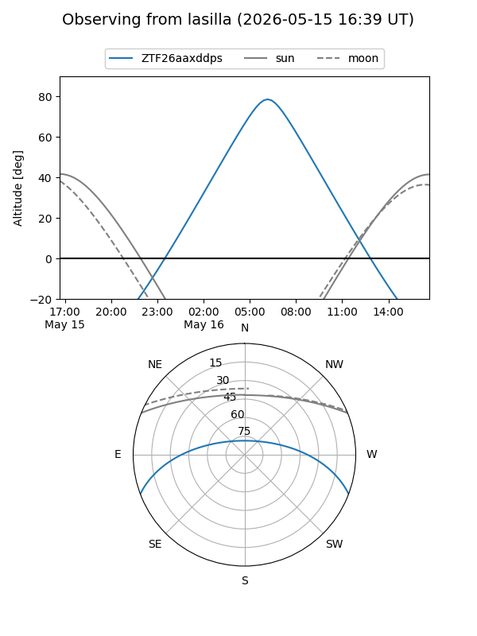
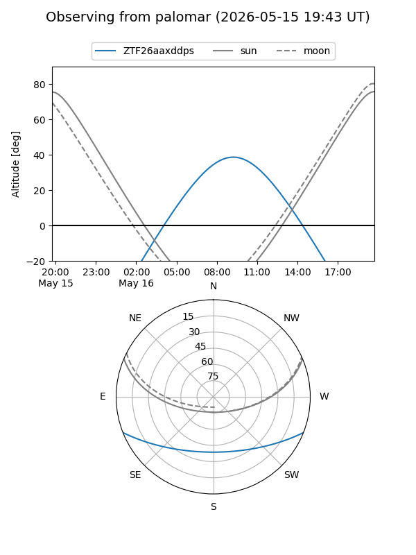

ZTF26aaxddps
Target ZTF26aaxddps at 2026-05-16 09:54
Aliases and brokers:
FINK: link
Lasair: link
ALeRCE: link
alt names
ZTF26aaxddps (ztf,fink_ztf)
Coordinates:
equatorial (ra, dec) = 255.1832,-17.86885
equatorial (HMS+DMS) = 17:00:43.98,-17:52:07.84
galactic (l, b) = (3.5459,+14.68606)
Flags:
Photometry:
last ztfg=18.97
1 ztfg detections
Lightcurve
Visibility


Additional plots